SimpleCurve class
Contents
Creating curves
Create curve by supplying x(t),y(t) parametrization on the interval I:
x = @(t)(t); y = @(t)(t.^2); I = [-1,1]; c = SimpleCurve(x,y,I); disp(c); plot(c);
Open curve x,y : [-1,1] -> R^2 Length : 2.9579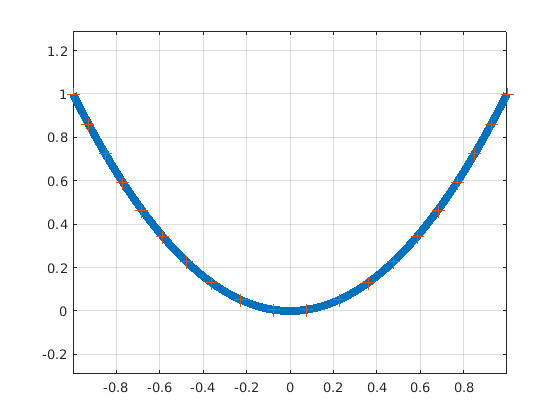
Create closed curve and indicate bounded side, plot the tangent vectors. Orientation can be reversed by c = reverse(c)
a = 1; b = 2; x = @(t)(a*cos(t.^2)); y = @(t)(b*sin(t.^2));I=[0,sqrt(2*pi)]; c = SimpleCurve(x,y,I,'left'); disp(c); figure; plot(c); showTgt(c); title('Clockwise') figure; plot(reverse(c)); showTgt(reverse(c)); title('Trigonometric')
Closed curve (bounded side on the left of the boundary) x,y : [0,2.5066] -> R^2 Length : 9.6884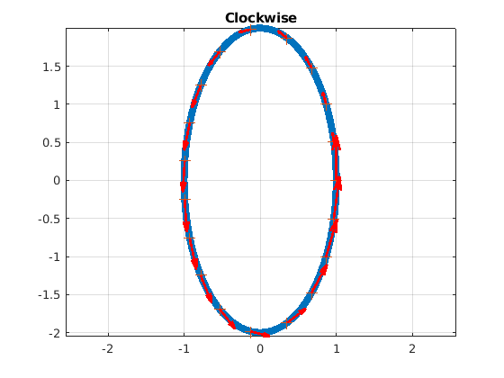 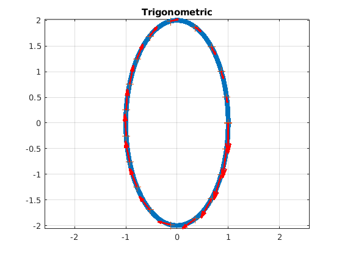
One can easily reparametrize the curve using an affine change of variables, or select a portion of the curve by restricting the interval of values for the parameter 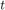.
c = affineReparam(c,[-1,1]); c = portion(c,[0,.75]); figure; plot(c);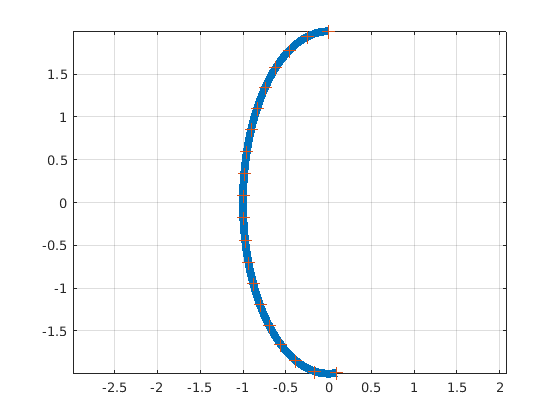
Derivatives of the parameter functions can be supplied. Otherwise, the values are computed approximately. When the derivatives are supplied, the reversal and affine reparametrization adjust the user supplied values accordingly.
close all; a = 1; b = 2; x = @(t)(a*cos(t.^2)); y = @(t)(b*sin(t.^2));I=[0,sqrt(2*pi)]; c = SimpleCurve(x,y,I,'left'); t = linspace(c.I(1),c.I(2),100000); tic; [Tx1,Ty1] = tgt(c,t); toc; dx = @(t)(-2*a*t.*sin(t.^2)); dy = @(t)(2*b*t.*cos(t.^2)); c = supplyDer(c,dx,dy); tic; [Tx2,Ty2] = tgt(c,t); toc; fprintf('Absolute error : %s \n', ... num2str(max(max(abs(Tx1- Tx2)),max(abs(Ty1 - Ty2))))); c2 = reverse(c); c3 = affineReparam(c2,[0,1]); t = linspace(c3.I(1),c3.I(2),100000); tic; [Tx3,Ty3] = tgt(c3,t); toc; c4 = forgetDer(c3); tic; [Tx4,Ty4] = tgt(c4,t); toc; fprintf('Absolute error : %s \n', ... num2str(max(max(abs(Tx3- Tx4)),max(abs(Ty3 - Ty4)))));
Elapsed time is 0.004165 seconds. Elapsed time is 0.003196 seconds. Absolute error : 0.00012566 0.00015828 Elapsed time is 0.003212 seconds. Elapsed time is 0.005785 seconds. Absolute error : 0.00078956 0.00099449
Normal vectors are easily computed using a direct rotatino of the tangent vector. We can thus plot the Frenet's frame
c = Scurve; figure; plot(c); showFrenet(c);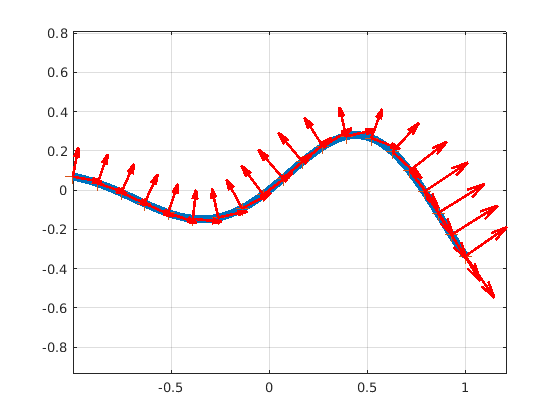
Arclength and normal parametrization
The length of the curve can be computed approximately from the expression
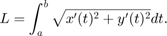
c = spirale();
figure;
plot(c);
showTgt(c);
fprintf('Length : %s \n',num2str(length(c)));
Length : 7.2691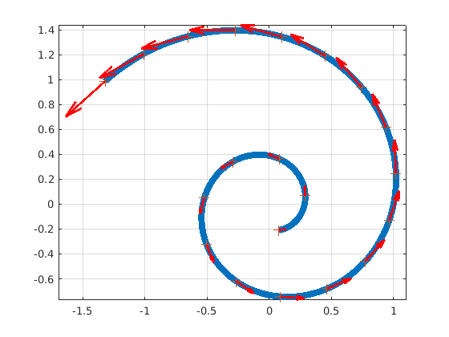
Given a parameter , one can compute the arclength 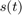 at the point t by using the previous formula replacing 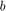 by . In the SimpleCurve class, this is implemented efficiently in order to compute simultaneously s(t) for many arguments 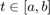. Using a Newton iteration, one can compute approximately the inverse function t(s)
a = c.I(1); b = c.I(2); t = linspace(a,b,10000); tic; s = c.s(t); toc; figure; plot(t,s); L = length(c); s = linspace(0,L,10000); tic; t = c.t_of_s(s); toc; hold on; plot(s,t); legend({'s(t)','t(s)'},'location','southeast'); legend boxoff; hold on plot([-5,10],[-5,10],'k--','HandleVisibility','off') xlim([-2,8]); ylim([-2,8]) axis equal
Elapsed time is 0.002316 seconds. Elapsed time is 0.010951 seconds.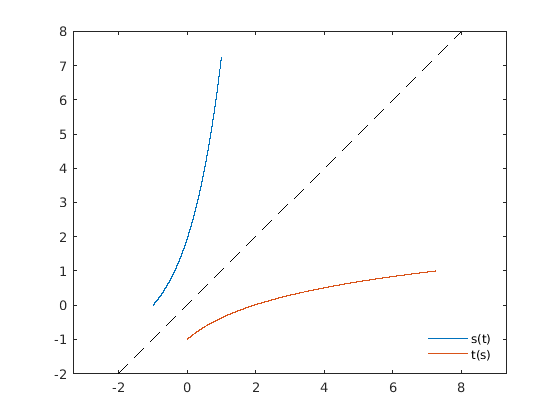
Using the inverse arclength, one can reparametrize a curve by its arclength. Observe that as expected, the tangent vectors of the normal parametrization all have the same length.
C = normalParam(c); figure plot(C); showTgt(C);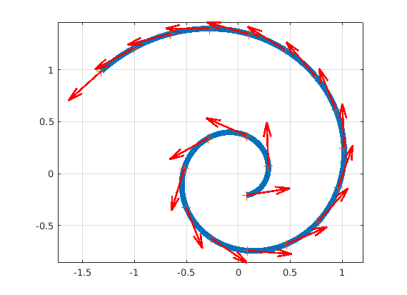
Curvature
One can compute the curvature using standard formulas. The curvature may be used to represent the osculatory circles. Note that the curvature is an intrinsic property of the curve,
figure; plotCurvature(C);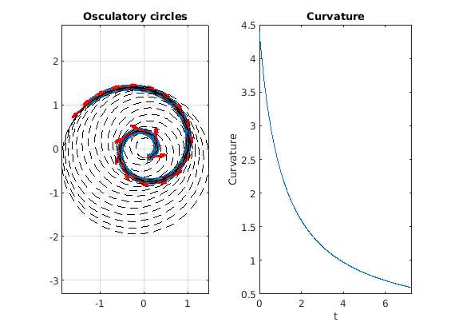